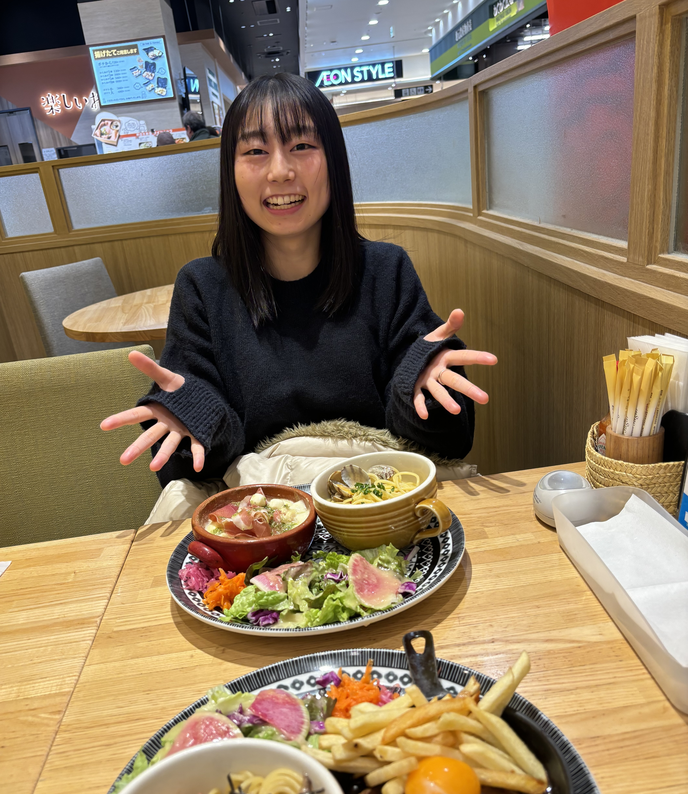

2024.01.07
Happy New Year
あけおめ！
なんとなく、みっぱらの写真！ なぜか食欲爆発して食べ過ぎたパステル！


2024.01
SPY×FAMILY
SPY×FAMILY
1月17日 劇場版SPY×FAMILY！！
3月23日 SPY×FAMILY展 in栄！！
10月5日 SPY×FAMILYワクワクパーク in金山！！
振り返ってみるとSPY×FAMILY過ぎた１年だった。


2024.04.09
birth day
彩乃の誕生日
当年もお誕生日おめでとう！！
誕生日プレゼントはApple Watch！今では彩乃の生活必需品になってる感じで毎日使ってくれてありがとう。
使いこなせてるかな？
欲しいものは行ってくれたけど、夜ご飯（ディナー）は相変わらず焼肉で俺が行きたいとこになってる気がする、、
行きたいとこ、食べたいものがあったら言うんだよ！せっかくなら良いもの食べよう！（それともお家でゆっくりしたいですか、、？）


2024.08.03
Fukuoka
福岡
PayPayドームの看板工事中で、ここもまた行かなきゃだね！！😅
ヒルトン、無料アップグレードでまさかのスイートルーム！！
すごい体験だった、、！


2024.09.15
Sendai
仙台
雨で試合流れちゃってどうなるかと思ったけど、無事試合見れてよかった！
牛タンも並んだけど美味しかったね！
仙台もまた行きたい！！


2024.11.15
7th anniversary
鎌倉
７周年記念旅行は鎌倉・江ノ島！
鎌倉でいっぱい食べ歩き、浜辺で海を感じて、江ノ島まで１時間半のウォーキング！
江ノ電すごい人だったけど一回行ってみたかったからありがとう！
江ノ島は恒例の水族館！！日本中の水族館行こうね！！笑


おまけ
pictures
おまけの写真
会社の招待でコートまで入れてもらったバスケの試合！ダンクは届かないよ笑
福岡への飛行機！彩乃初めての飛行機だと思ったのに直前に初めて奪われた、、笑
そして何より同棲開始です！！坂井田家様、色々家具家電のサポートありがとうございました。
大好きな彩乃と一緒にいれる楽しみさ９割と、うまくやっていけるか、一緒にいることで喧嘩しないかの不安１割で始まりました。
現状、特に不満なく過ごせてます！
彩乃は不満ありますか、、？あれば遠慮なく言ってください！！